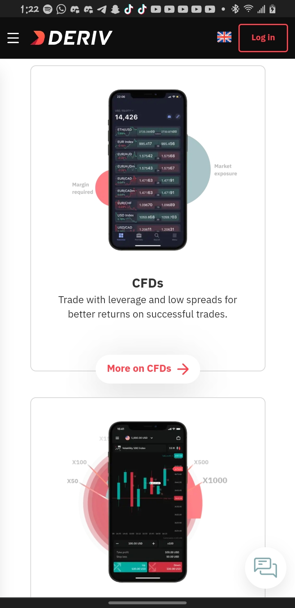
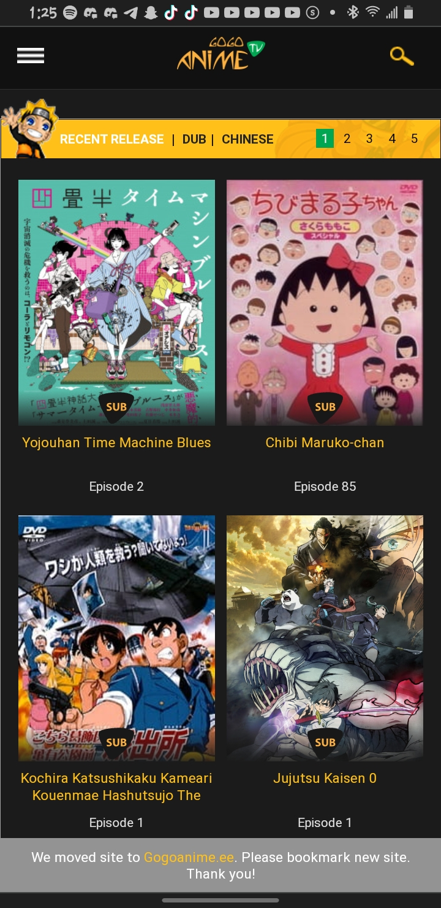
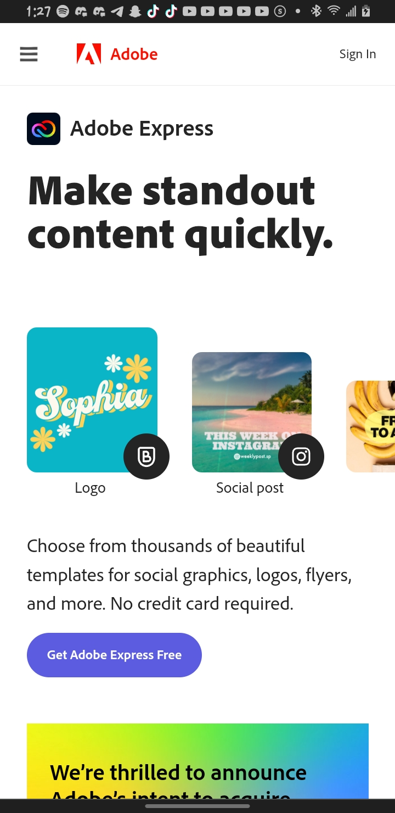

Deriv
deriv.com The Deriv website shows repetition because most ot the images, text and even the layouts are almost the same, which gives the feeling that the elements are related and they give the user a clear understanding of what the website is about.
Gogoanime
gogoanime.sk One of the reasons I like gogoanime website is because of the different contrast the elements uses. The different contrast in this website makes it easy to identify the background and the texts, while also making the images blend with the other elements in the website.
Adobe
adobe.com Adobe.com is one of the websites that takes advantage of white space to make the website look really neat and professional while making elements easy to find in the site.